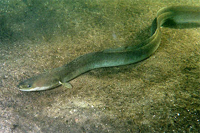

Biologia i rozpoznawanie
Wygląd i rozpoznawanie
Węgorz europejski (łac. Anguilla anguilla) ma wężowate, walcowate ciało pokryte grubą warstwą śluzu i drobnymi, głęboko osadzonymi w skórze łuskami, przez co sprawia wrażenie nagiego. Płetwy grzbietowa, ogonowa i odbytowa są zrośnięte w jeden ciągły fałd okalający tylną część ciała; brak płetw brzusznych. Ubarwienie zmienia się z wiekiem: młode i żerujące osobniki (tzw. węgorz żółty) mają oliwkowobrunatny grzbiet i żółtawy brzuch, natomiast ryby przygotowujące się do wędrówki tarłowej (węgorz srebrzysty) nabierają ciemnego grzbietu, srebrzystych boków i powiększonych oczu. W polskich wodach węgorza trudno z czymkolwiek pomylić — najbliższy z wyglądu minóg ma przyssawkową, bezszczękową gębę i otwory skrzelowe w rzędzie, a śliz czy piskorz są wielokrotnie mniejsze. Węgorze łowione w Polsce mierzą zwykle 50–90 cm; samice są wyraźnie większe od samców.
Środowisko i występowanie w Polsce
Węgorz zasiedla niemal wszystkie typy wód nizinnych: jeziora, rzeki, kanały, starorzecza, zalewy przymorskie i strefę przybrzeżną Bałtyku. Historycznie najliczniejszy był w zlewniach uchodzących do morza — na Pomorzu, Warmii i Mazurach — gdzie narybek wstępował naturalnie z Bałtyku. Dziś, wskutek zabudowy rzek i drastycznego spadku liczebności gatunku w całej Europie, większość polskich populacji pochodzi z zarybień prowadzonych w ramach programów ochrony. Węgorz jest skrytym mieszkańcem dna: dnie spędza zagrzebany w mule, pod kamieniami, w norach brzegowych, między korzeniami i w zwaliskach, a żeruje głównie nocą. Dobrze znosi niską zawartość tlenu i potrafi przeczołgać się nocą przez mokrą trawę między zbiornikami, co tłumaczy jego obecność w stawach pozornie odciętych od świata. Najlepsze łowiska to żyzne jeziora z mulistym dnem oraz wolno płynące odcinki rzek.
Biologia i tarło — najdziwniejszy cykl życiowy Europy
Cykl życiowy węgorza przez wieki był zagadką. Dziś wiemy, że gatunek odbywa tarło w Morzu Sargassowym na zachodnim Atlantyku, tysiące kilometrów od Europy. Przezroczyste larwy (leptocefale) dryfują z Prądem Zatokowym ku wybrzeżom Europy przez okołu dwóch–trzech lat, przeobrażają się w tzw. węgorze szkliste i wstępują do rzek, gdzie spędzają — w zależności od płci i warunków — od kilku do nawet dwudziestu kilku lat, żerując i rosnąc. Następnie przeobrażają się w formę srebrzystą, przestają żerować i ruszają z powrotem przez ocean na tarło, po którym giną. W wodach śródlądowych węgorz nigdy się nie rozmnaża — każda ryba w polskim jeziorze przyszła z morza albo z zarybienia. Ta jednorazowość rozrodu i ekstremalnie długi cykl życiowy sprawiają, że odbudowa populacji jest powolna, a presja na gatunek wyjątkowo dotkliwa.
Status gatunku krytycznie zagrożonego
Trzeba to powiedzieć wprost: węgorz europejski jest klasyfikowany przez IUCN jako gatunek krytycznie zagrożony (CR). Liczba młodych węgorzy docierających do wybrzeży Europy spadła od lat 70. XX wieku o ponad 90% — wśród przyczyn wymienia się przełowienie (zwłaszcza narybku szklistego), zabudowę hydrotechniczną rzek i śmiertelność w turbinach, utratę siedlisk, pasożyta pęcherza pławnego zawleczonego z Azji, zanieczyszczenia oraz zmiany prądów oceanicznych. Gatunek objęty jest unijnym rozporządzeniem węgorzowym i planami gospodarowania, a handel międzynarodowy ogranicza konwencja CITES. Dla wędkarza wniosek jest prosty: nawet tam, gdzie połów i zabieranie węgorzy są legalne, warto rozważyć dobrowolne ograniczenie lub całkowitą rezygnację z zabierania ryb. Każdy duży węgorz wypuszczony to potencjalny tarlak, który może dopłynąć do Sargassowego.
Zwyczaje żerowania według pór roku
Węgorz jest rybą ciepłolubną o wyraźnej sezonowości. Wiosną budzi się do aktywności, gdy woda przekroczy około 10–12°C, zwykle w drugiej połowie kwietnia i w maju — żeruje wtedy coraz regularniej, często przy brzegach, gdzie woda nagrzewa się najszybciej. Lato to szczyt sezonu: węgorz żeruje niemal wyłącznie nocą, najintensywniej w ciemne, parne, bezksiężycowe noce, a także podczas deszczu i po burzach, gdy zmącona woda dodaje mu śmiałości. W dzień bierze sporadycznie, głównie przy mętnej wodzie. Wczesna jesień bywa jeszcze dobra, szczególnie ciepły wrzesień, ale wraz ze spadkiem temperatury wody poniżej 10°C aktywność gaśnie. Zimą węgorz nie żeruje — zagrzebuje się w mule i zapada w odrętwienie aż do wiosny, więc połów w tym okresie praktycznie nie istnieje. Pokarm węgorza to bezkręgowce denne, larwy, raki, ikra oraz drobne ryby; większe osobniki są wyraźniej rybożerne.
Przepisy, metody i taktyka
Wymiar ochronny, okres ochronny i limit dobowy
Według ogólnych zasad PZW orientacyjny wymiar ochronny węgorza wynosi 60 cm, a limit dobowy to 2 sztuki; w wodach śródlądowych PZW węgorz tradycyjnie nie miał klasycznego okresu ochronnego, jednak przepisy dotyczące tego gatunku zmieniają się częściej niż dla innych ryb ze względu na jego status ochronny — w wodach morskich i przymorskich oraz w niektórych okręgach obowiązują odrębne, surowsze zasady, w tym okresy zakazu połowu wynikające z przepisów unijnych. Dlatego przy węgorzu weryfikacja aktualnych przepisów jest absolutnie kluczowa: sprawdź zezwolenie i regulamin okręgu PZW, na którego wodzie łowisz, komunikaty na pzw.org.pl, a przy wodach morskich i zalewach także aktualne rozporządzenia dotyczące rybołówstwa. Wartości podane tutaj są wyłącznie orientacyjne i mogły ulec zmianie.
Metody i przynęty
Węgorza łowi się niemal wyłącznie metodami gruntowymi na przynęty naturalne. Klasyka to pęczek rosówek lub dendrobena na haku z dłuższym trzonkiem, podany na prostym zestawie przelotowym z ciężarkiem; równie skuteczna, a bardziej selektywna wobec dużych sztuk, jest mała martwa rybka (ukleja, kiełb) lub jej połówka. W jeziorach sprawdza się też zestaw z koszyczkiem zanęconym zanętą z dodatkiem rozdrobnionych robaków. Sygnalizacja brań nocą to elektroniczne sygnalizatory lub dzwoneczki; zestaw powinien stać na luźnym hamulcu, bo węgorz po wzięciu odjeżdża z przynętą. Hak warto stosować pojedynczy, mocny, w rozmiarze dopasowanym do przynęty, a żyłkę główną 0,25–0,35 mm — nie z powodu siły brań, lecz dlatego, że hol często odbywa się wśród przeszkód. Uwaga praktyczna: węgorz głęboko połyka przynętę, dlatego po sygnale lepiej zacinać wcześnie. Jeśli planujesz wypuszczać ryby, rozważ rezygnację z połowu — głęboko zahaczony węgorz ma ograniczone szanse przeżycia.
Taktyka łowienia
Węgorzowa taktyka to przede wszystkim wybór miejsca i czasu. Łowimy nocą, od zmierzchu, najlepiej w ciepłe, ciemne i parne noce; stanowiska typowe to skraje trzcinowisk, rynny przy brzegach, okolice zwalonych drzew, ujścia dopływów, rejony przy mostach oraz granice mulistego i twardego dna. Na jeziorach dobre bywają podwodne górki i stoki przylegające do głębin, na rzekach — spokojne zatoki i wolne rynny przy nurcie. Przynęty zarzucamy wieczorem i łowimy „na czuja": pierwszy sygnał to zwykle pojedyncze stuknięcia, potem odjazd. Po zacięciu nie wolno dawać luzu — węgorz natychmiast szuka przeszkody i potrafi zakotwiczyć się ogonem o korzeń tak skutecznie, że wyciągnięcie go staje się niemożliwe. Wyholowaną rybę najłatwiej opanować na suchej trawie lub w pojemniku; chwytanie śliskiego węgorza gołą ręką w ciemności to ćwiczenie z pokory. Sucha szmatka lub ręcznik (jeśli ryba ma być zabrana) albo głęboki podbierak i odhaczanie bez wyjmowania (jeśli wraca do wody) znacznie ułatwiają sprawę.
Rekordy Polski — orientacyjnie
Rejestry wędkarskie notują w Polsce węgorze o długości około 110–130 cm i masie w okolicach 3–4 kg, a historyczne doniesienia mówią o rybach jeszcze cięższych — dane te, jak zawsze, traktujemy orientacyjnie, bo dawne rekordy bywają słabo udokumentowane. W praktyce węgorz powyżej 80 cm to bardzo dobra ryba, a metrowy osobnik — prawdziwa rzadkość, niemal na pewno stara samica. Warto pamiętać, że tak duże węgorze mają za sobą kilkanaście i więcej lat życia w naszych wodach, a przed sobą — potencjalnie — wędrówkę tarłową, co jest mocnym argumentem za ich wypuszczaniem.
Wartość kulinarna — uwaga na dioksyny i status gatunku
Wędzony węgorz uchodzi za przysmak i osiąga wysokie ceny, jednak są dwa poważne „ale". Po pierwsze: węgorz jest rybą bardzo tłustą i długowieczną, żerującą w osadach dennych, przez co kumuluje zanieczyszczenia rozpuszczalne w tłuszczach — dioksyny, polichlorowane bifenyle (PCB) i metale ciężkie. Badania węgorzy z różnych akwenów europejskich, w tym bałtyckich, wielokrotnie wykazywały przekroczenia norm, a niektóre kraje zalecają ograniczanie spożycia, szczególnie przez dzieci i kobiety w ciąży. Po drugie: jedzenie ryby krytycznie zagrożonej wyginięciem jest po prostu trudne do obrony etycznie, niezależnie od legalności połowu. Świeżej krwi węgorza nie należy ponadto dopuszczać do kontaktu z oczami i ranami — zawiera toksyczne białka, które neutralizuje dopiero obróbka cieplna. Nasza rekomendacja: traktuj węgorza jako rybę do wypuszczania, a jeśli już zabierasz — rzadko, w ramach limitu i ze świadomością powyższych zastrzeżeń.
Ciekawostki
Zagadkę rozrodu węgorza próbował rozwikłać młody Zygmunt Freud, który w 1876 roku przeprowadził sekcje setek węgorzy w poszukiwaniu gonad — bezskutecznie, bo narządy rozrodcze rozwijają się dopiero podczas wędrówki oceanicznej. Tarliska w Morzu Sargassowym wskazał dopiero duński badacz Johannes Schmidt po kilkunastu latach rejsów, śledząc coraz mniejsze larwy. Do dziś nikt nie sfilmował tarła węgorza w naturze, a dopiero badania telemetryczne ostatnich lat potwierdziły trasę dorosłych ryb do Sargassowego. Węgorz potrafi pobierać tlen przez skórę, dzięki czemu przeżywa wiele godzin poza wodą w wilgotnym środowisku, i pokonuje nocą lądowe przesmyki między zbiornikami. W kulturze dawnych Mazur i Pomorza węgorz był podstawą lokalnej gospodarki — węgornie, czyli stałe pułapki na wędrujące ryby, działały na ciekach od średniowiecza.
FAQ — najczęstsze pytania
Czy łowienie węgorza jest w ogóle legalne?
Tak, w większości wód PZW połów węgorza pozostaje legalny w ramach wymiaru i limitu, jednak przepisy dotyczące tego gatunku zmieniają się częściej niż dla innych ryb, a na wodach morskich i przymorskich obowiązują odrębne, okresowo zaostrzane regulacje unijne. Zawsze sprawdzaj aktualne zezwolenie, regulamin okręgu i komunikaty na pzw.org.pl przed wyjazdem — to, co było dozwolone w zeszłym sezonie, mogło się zmienić.
Kiedy najlepiej łowić węgorze?
Statystycznie najlepsze są ciepłe, ciemne, bezksiężycowe noce od maja do września, zwłaszcza parne wieczory przed burzą i noce z drobnym deszczem. Zimą i wczesną wiosną węgorz praktycznie nie żeruje. To prawidłowości, nie gwarancje — zdarzają się świetne noce bez brań i odwrotnie, a o wyniku często decyduje obecność ryb w zasięgu zestawu, nie pogoda.
Jak odróżnić węgorza żółtego od srebrzystego i czemu to ważne?
Węgorz żółty ma oliwkowy grzbiet, żółtawy brzuch i mniejsze oczy — to forma żerująca. Węgorz srebrzysty ma ciemny grzbiet, jasnosrebrne boki i wyraźnie powiększone oczy — to ryba przeobrażona do wędrówki tarłowej, która przestaje żerować i rusza ku morzu, zwykle w jesienne, ciemne noce. Złowione przypadkiem srebrzyste węgorze szczególnie warto wypuszczać: to gotowi tarlacy, ostatnia nadzieja gatunku.
Co zrobić, gdy węgorz głęboko połknął haczyk?
Nie wyrywać haka. Jeśli ryba jest wymiarowa i ma zostać zabrana — uśmiercamy ją humanitarnie i hak odzyskujemy przy patroszeniu. Jeśli ma wrócić do wody, odcinamy przypon możliwie blisko pyska i wypuszczamy rybę z hakiem; badania na różnych gatunkach pokazują, że ma wtedy większe szanse niż po próbach wydłubywania. Najlepszą profilaktyką jest wczesne zacinanie i pojedyncze haki.
Źródła i weryfikacja
Treści mają charakter przeglądowy i edukacyjny. Wymiary, okresy ochronne i limity podano według ogólnych zasad PZW na dzień publikacji — w przypadku węgorza przepisy zmieniają się szczególnie często ze względu na status gatunku, dlatego każdorazowo weryfikuj je w aktualnym zezwoleniu, regulaminie właściwego okręgu PZW oraz na pzw.org.pl, a na wodach morskich także w bieżących rozporządzeniach. FishPoint nie gwarantuje wyników połowu i zachęca do odpowiedzialnego obchodzenia się z tym krytycznie zagrożonym gatunkiem.